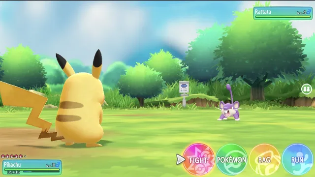
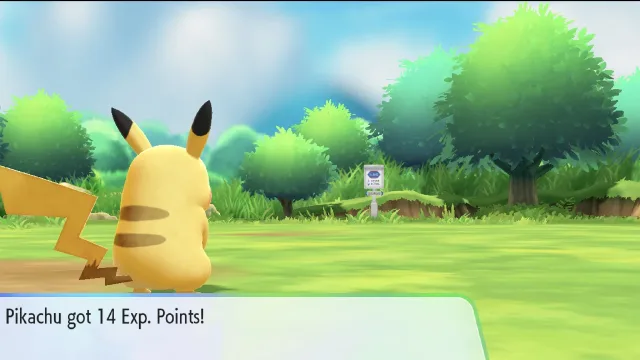
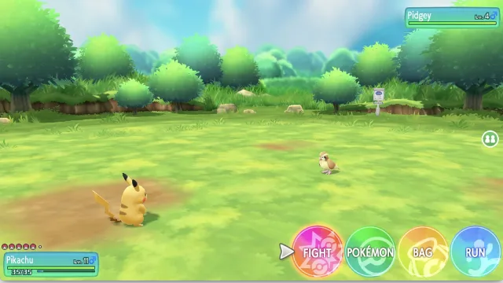
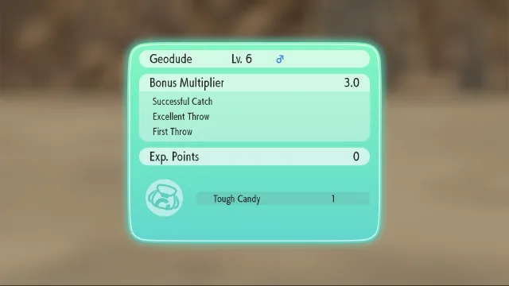
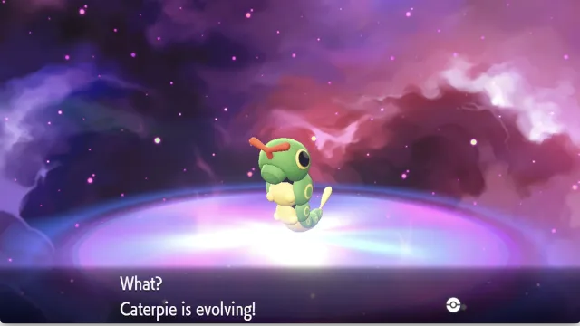
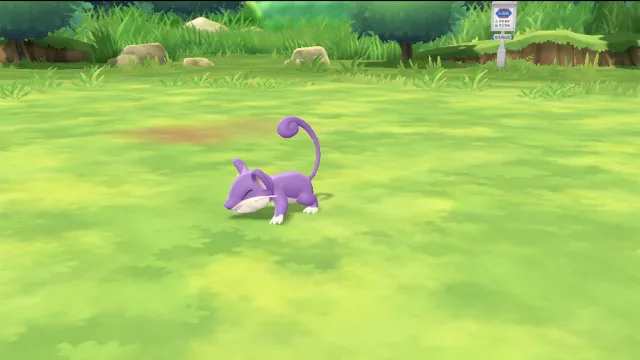
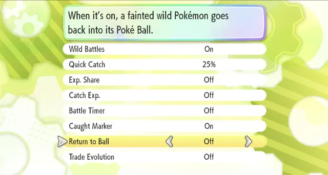

Battle
Turn-based wild battles
Every wild encounter becomes a classic battle: Fight, Pokémon, Bag and Run.
Walk into a wild Pokémon and fight it the classic way, turn by turn. Knock it out and your team earns real EXP. Weaken it, press Y, and catch it.
The download has every feature switched on, and you can change each one later in the game's own Options menu.

Every wild encounter becomes a classic battle: Fight, Pokémon, Bag and Run.

The game's own EXP amounts, with level-ups, new moves and evolutions.

In every battle, wild or Trainer, EXP goes to the Pokémon that fought. Switch someone in and they share it.

Bring a wild Pokémon to 25% HP or less, press Y, and throw a ball in the game's own catch scene.

Catching gives no EXP, so your team gets stronger by fighting. The catch summary and its candy reward still show.

Wild Pokémon faint cleanly, there's no 5-minute timer, and a Poké Ball by the HP box shows when you've caught that species before.
It takes about two minutes. You'll need Pokémon: Let's Go, Pikachu! or Let's Go, Eevee! with the 1.0.2 update, on a platform that supports IPSwitch (.pchtxt) patches.
One small zip file per game. Each one only works on its own game.
Install it like any IPSwitch (.pchtxt) patch mod on your platform, then make sure Wild Battles Remastered is enabled. Tested on the Eden emulator.
Back up your save, start the game, and walk into a wild Pokémon. The battle starts right away, even on a brand-new game.

The mod has its own page in the game's Options menu. Go to the last row, Wild Battles Settings, and press A (or left or right) to open it. Your choices are kept in your save.
In your game's language. On and Off are the game's own words; the rest is our translation, and corrections are welcome.
Yes. There's a separate mod for Pokémon: Let's Go, Eevee! (1.0.2 update) with the same features. Download {{ZIP_EEVEE_NAME}}; each mod only works on its own game.
Use it on its own. It already includes everything for wild battles, EXP and catching, so turn off any other mod that changes those.
In a wild battle, bring the wild Pokémon down to 25% HP or less (its HP bar turns red), then press Y. You'll go straight into the game's catch scene. Above 25%, Y does what it normally does.
So your team grows by battling. The catch summary and its candy reward still show. If you'd like the game's normal catch EXP back, turn Catch Exp. on in the mod's settings page.
No. It works from the very start of a new game. Before "Play with Pikachu" or "Play with Eevee" is unlocked, the mod switches your partner on just for its own wild battles and back off afterwards, so your partner appears and battles normally and your story progress isn't changed.
Every feature was played live on v{{VERSION}} in both games, and EXP was checked in the saved game before and after each test. Let's Go, Pikachu! was played from the early routes to Cerulean City, and Let's Go, Eevee! from the very start of a new game. The testing page lists every check and what still needs testers.
The mod doesn't change your progress. The only thing it keeps in your save is its own settings, in spare bits of the game's Options settings that the game doesn't use. Still, back up your save before trying any mod.
Yes, any time. Set Wild Battles to Off in the mod's settings page (Options → Wild Battles Settings) and wild Pokémon are caught the usual way again. Turn it back on whenever you like.
It's a free fan project that contains no game code, files or keys. You need your own legally owned copy of the game and its 1.0.2 update. See the disclaimer.
See what's been tested. Found a problem? Tell us on GitHub.
Download the mod for your game, add it, and go find a wild Pokémon.
Inspired by Rico Santos' original Wild Battles and Win or Catch mods and by feelingdev's The Better Let's Go, with research from raulzrrs' letsgo-recomp, and made with free tools like Eden, Ghidra and Capstone. See the full credits.